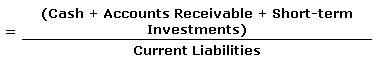

A stringent indicator that determines whether a firm has enough short-term assets to cover its immediate liabilities without selling inventory. The acid-test ratio is far more strenuous than the working capital ratio, primarily because the working capital ratio allows for the inclusion of inventory assets.
Calculated by:
Companies with ratios of less than 1 cannot pay their current liabilities and should be looked at with extreme caution. Furthermore, if the acid-test ratio is much lower than the working capital ratio, it means current assets are highly dependent on inventory. Retail stores are examples of this type of business.
The term comes from the way gold miners would test whether their findings were real gold nuggets. Unlike other metals, gold does not corrode in acid; if the nugget didn't dissolve when submerged in acid, it was said to have passed the acid test. If a company's financial statements pass the figurative acid test, this indicates its financial integrity.
{kind=link}